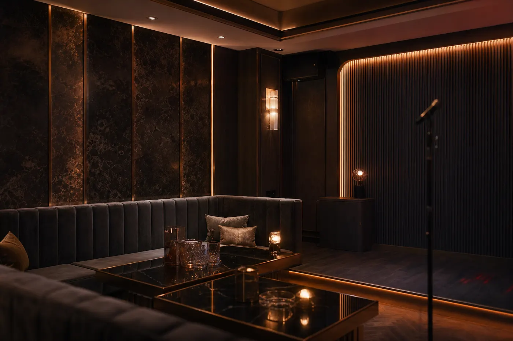

01
혼자 방문할 때
1인 방문도 가능합니다. 도착 예정 시간과 처음 방문인지 여부를 알려주시면 현재 이용 가능 여부와 포함 구성을 함께 확인할 수 있습니다.
인원 · 도착 시간만 보내주세요
010‑2676‑2894
이용 안내
방문 인원과 이용 조건을 알려주시면 출발 전에 금액과 포함 구성을 안내합니다. 양주나 안주가 필요하면 문의할 때 구성과 금액을 별도로 확인해 주세요.
상황별 안내
01
1인 방문도 가능합니다. 도착 예정 시간과 처음 방문인지 여부를 알려주시면 현재 이용 가능 여부와 포함 구성을 함께 확인할 수 있습니다.
02
두 명의 도착 시간이 같다면 대표 한 분이 인원과 시간을 보내주시면 됩니다. 출발 전에 이용 금액과 포함 구성을 함께 확인하세요.
03
인원 제한은 따로 두지 않지만 현재 룸 상황을 확인해야 합니다. 확정 인원과 예상 도착 시간을 먼저 보내고, 인원이 바뀌면 출발 전에 다시 알려주세요.
04
대표 한 분이 먼저 연락하고 나머지 일행의 도착 순서를 알려주세요. 주소는 서강로 144이며, 신촌역 6번·7번 출구에서 도보 약 2분입니다.
05
차량 방문과 주차가 가능합니다. 출발 전에 차량 방문 여부와 차량 대수를 전달하고, 구체적인 진입 안내는 도착 전에 확인해 주세요.
방문 순서
“2명, 오늘 23시 도착”처럼 방문 인원과 예상 시간을 전화·카톡·텔레그램으로 알려주세요.
방문 인원에 따른 금액과 포함 구성을 확인합니다. TC와 소주·맥주 무제한이 포함되며 별도 구성이 필요하면 이때 함께 문의하세요.
서울 마포구 서강로 144 지하1층으로 이동합니다. 신촌역 6번 또는 7번 출구에서 도보 약 2분이며 픽업은 제공하지 않습니다.
건물 도착 5분 전이라도 다시 연락하면 현재 룸 상황과 입장에 필요한 내용을 확인할 수 있습니다.
입장 후 안내와 초이스를 확인한 다음 결제합니다. 결제는 현금·카드·계좌이체 중 선택할 수 있습니다.
시간대별 확인
식사나 모임 이후 이동할 예정이라면 예상 도착 시간을 먼저 정해두세요. 인원과 시간만 보내면 현재 상황을 확인할 수 있습니다.
희망 시간이 정해져 있다면 출발 전에 연락하는 편이 좋습니다. 문의가 겹칠 때는 전화가 가장 빠릅니다.
늦은 시간에도 운영합니다. 출발 전 이용 가능 여부와 건물 입장 동선을 함께 확인한 뒤 이동해 주세요.
오시는 길
2호선 신촌역 6번 또는 7번 출구에서 도보 약 2분입니다. 차량 방문과 주차가 가능합니다.
신촌역 6·7번 출구서강로 144 · 하나은행 인근
처음 방문 안내
출발 전 준비
혼자 방문하는지, 두 명인지, 여러 명인지 확인합니다. 이동 중 인원이 바뀌면 최종 인원을 다시 알려주세요.
정확한 분 단위가 아니어도 됩니다. “30분 후” 또는 “오늘 23시”처럼 대략적인 시간만 전달해도 됩니다.
도보·택시·자가용 중 어떤 방법으로 오는지 정하세요. 차량 방문이라면 차량 대수도 함께 알려주세요.
기본 요금에는 TC와 소주·맥주 무제한이 포함됩니다. 양주·안주가 필요하면 출발 전에 구성과 금액을 확인하세요.
성인만 이용할 수 있습니다. 심야 방문이라면 신분증과 지하철 막차 또는 택시 귀가 방법을 함께 확인하세요.
자주 묻는 질문
사전 예약은 필수가 아닙니다. 출발 전이나 도착 5분 전이라도 연락하면 현재 룸 상황과 이용 조건을 먼저 확인할 수 있습니다.
네, 1인 방문도 가능합니다. 방문 인원과 도착 예정 시간을 알려주시면 안내합니다.
방문 인원과 이용 조건을 알려주시면 출발 전에 포함 구성과 함께 안내합니다.
표시된 인원별 요금에는 TC와 소주·맥주 무제한이 포함됩니다. 양주와 안주는 필요한 경우 문의 시 구성과 금액을 확인해 주세요.
현금·카드·계좌이체가 가능하며 안내와 초이스를 확인한 뒤 결제합니다.
입장 후 안내와 초이스를 먼저 확인하고 그다음 결제를 진행합니다.
운영시간은 오후 6시부터 다음 날 오전 9시까지입니다.
서울특별시 마포구 서강로 144 지하1층입니다. 신촌역 6번 또는 7번 출구에서 도보 약 2분입니다.
차량 방문과 주차가 가능합니다. 출발 전에 차량 방문 여부와 차량 대수를 함께 알려주세요.
픽업은 제공하지 않습니다. 신촌역에서 도보로 이동하거나 택시·자가용으로 주소지까지 와주세요.
방문 인원, 예상 도착 시간, 차량 방문 여부만 보내주시면 됩니다. 처음 방문이라면 함께 말씀해 주세요.
가능합니다. 다만 희망 시간이 정해져 있다면 출발 전에 연락하는 편이 현재 상황을 확인하기 좋습니다.
인원 제한은 따로 두지 않지만 룸 상황 확인이 필요합니다. 확정 인원과 도착 시간을 출발 전에 알려주세요.
만 19세 미만은 이용할 수 없습니다. 연령 확인이 필요할 수 있으므로 신분을 확인할 수 있는 신분증을 준비하세요.
던힐 · 김실장 직통 안내